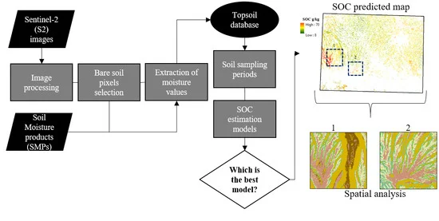
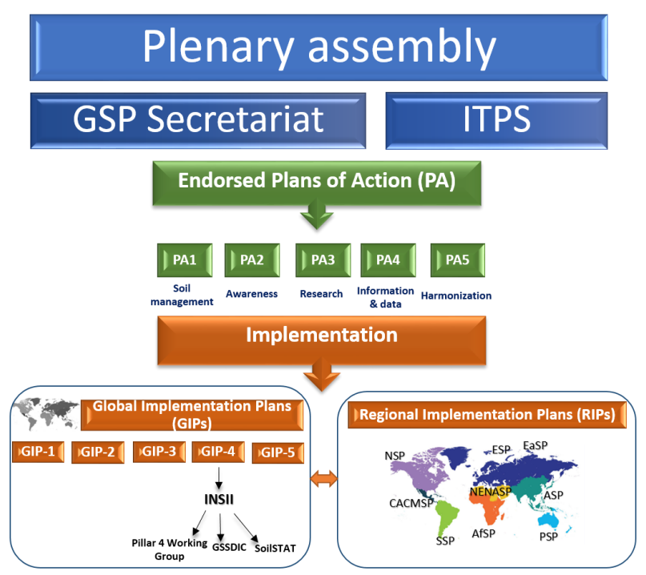

4 In practice: Tracking Soil Organic Carbon
4.1 Summary
The amount of carbon in the atmosphere has increased by 30% in the past two centuries from high levels of fossil fuel combustion and deforestation, leading to rising global temperatures.
Among many well-known strategies to reduce our carbon footprints, such as developing energy-efficient fuels and reducing greenhouse gas emissions, there are also strategies such as soil carbon sequestration, tree planting, and ocean carbon sequestration.
How carbon is captured within soil:
- Plants capture carbon through photosynthesis, and some remain as plant tissue. Dead plant tissue enters the soil as litter and decomposes.
- Decomposition creates soil organic matter (SOM), the main carbon stored in soil. SOM can hold carbon for a long time or release it back into the atmosphere.
- Various factors like climate, vegetation, texture, and drainage influence carbon storage.
Direct human intervention (on-farm activities) could also enhance soil carbon sequestration.

Globally, there are policies in place to incentivise farmers to undertake on-farm activities that sequester soil carbon.
For example, in California’s Cap-and-Trade Program, the private sector can buy carbon credits for their offset targets. Downstream, rice farmers, for instance, may volunteer to implement one of three methods included in the protocol to sequester carbon: dry seeding, early drainage, or alternative wetting or drying at the price per ton CO2e was $7. (“Carbon Farming: Opportunities for Agriculture and Farmers to Gain From Decarbonization” n.d.)
Adoption challenges for these markets include (1) ensuring accurate carbon measurement and (2) verifying “additionality” - that carbon sequestration wouldn’t have happened without the market incentive. Between the two main challenges, Remote Sensing technology has the most potential in tackling the first at scale, rather than relying on local field work that is labour-intensive and limited by nature, albeit more precise.
4.2 Application
4.2.1 From academia…
There has only been a recently increasing academic focus on the application of Remote Sensing and Earth Observation technologies to map and Monitor Soil Organic Carbon, with much credit to the free and open availability of satellite imagery, such as that of Sentinel missions, facilitated by the Copernicus program. Here are some notable works in this realm and their significance to the state-of-the-art:
Tziolas et al. (2021) is a formative article that provided insights into the usage of AI techniques and other data pipeline rigour and innovations to increase resolutions and better harness EO data. In the article, they aptly pointed out that ‘an EO data-driven approach should be prioritized if progress towards the soil policy and economic strategic goals is to be accelerated’ which reveals the current disconnect between academia and actual adoption of this technology, perhaps due to non-standardised SOC monitoring methodology and a lack of focus on the end-user experience.
Indeed, a further review of current literature showcases the vast complexity that analysts must contend with in order to reliably measure SOC. For example, van Wesemael et al. (2023) highlighted the need for bare soil conditions and recommended temporal mosaicking to remove irrelevant spectral variations to arrive at a robust SOC prediction model. Upon that conclusion, other researchers delved deeper into diverging techniques to extract bare soil pixels from Sentinel and Landsat data.
- Urbina-Salazar et al. (2021) showed that Sentinel 1/2 soil moisture products were helpful in extracting bare and dry soil pixels
- Zepp et al. (2021) used multitemporal (30+ years) satellite images as an alternative to retrieve exposed soils from a soil reflectance composite
- Dvorakova, Heiden, and van Wesemael (2021) instead focused on a particular period based on a time series of normalised difference vegetation index (NDVI), and concluded that the best SOC prediction could already be achieved for this particular period by using a strict normalised burn ratio 2 (NBR2) threshold.

Other works focused on improving the prediction model further with higher spatial resolution input data to correspond with average field size (Möller et al. 2022), and techniques to overcome vegetation cover (Heiden et al. 2022)
On the other hand, depth matters when it comes to SOC mapping (“Depth Matters for Soil Carbon Accounting – CarbonPlan” n.d.), with best practices requiring soil sampling that encompasses the full crop-rooting zone of a minimum of 30 cm. Therefore, 3D mapping is another frontier where many innovations have emerged. The pseudo-3D technique is the building of separate models for individual depth intervals, whose interval predictions are integrated to get the full profile of SOC.
4.2.2 …to the public domain
The first Global Soil Organic Matter map was launched on World Soil Day in 2017), by the United Nations Food and Agriculture Organisation (FAO). The map is produced on a common grid for 100 countries, allowing scientists and policymakers to identify degraded areas and explore the potential for soils to capture soil carbon. The map also helps set restoration targets, support the greenhouse gas emission reporting under the United Nations Framework Convention on Climate Change, and make evidence-based decisions to mitigate and adapt. (“Hutton Soil Scientists Help Develop First Global Soil Organic Carbon Map | The James Hutton Institute” n.d.).


4.3 Reflection
A precise and reliable global view of SOC is needed under different UN conventions, such as the UN Convention on Climate Change and Desertification (UNCCD) and the Sustainable Development Goals (SDG). At the national level, such data can be used as reference soil carbon stocks, with the aim of refining national greenhouse gas inventories and assessing the sensitivity of soils to degradation and climate change.
That said, scant evidence has been found to show further applications using the GSOC map, or Level-3 EO SOC mapping products, either at the national level at finer spatial resolution or by the private or public sector, as an active component to incentivise stakeholders to take action. In most cases, what GSP was able to produce was a series of guidelines for national stakeholders without imposing shared deliverables and timelines. Instead, the original GSOC maps are used to determine the status quo and rally political interest at the national level and do not possess the spatial resolution needed to make them effective monitoring tools.
Possible reasons may lie in technical competency to effectively produce national soil maps with the right open data policy to allow the public and other innovators to tap into this data.